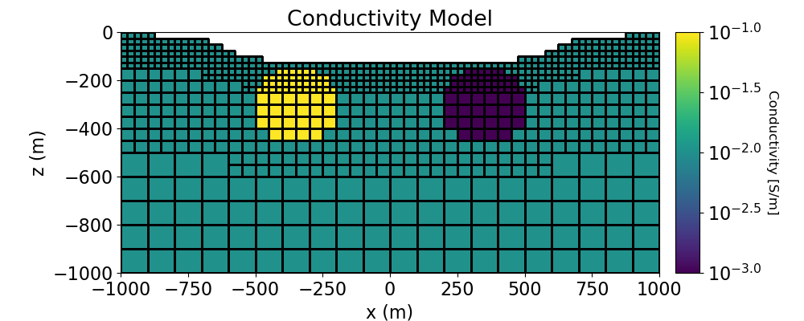
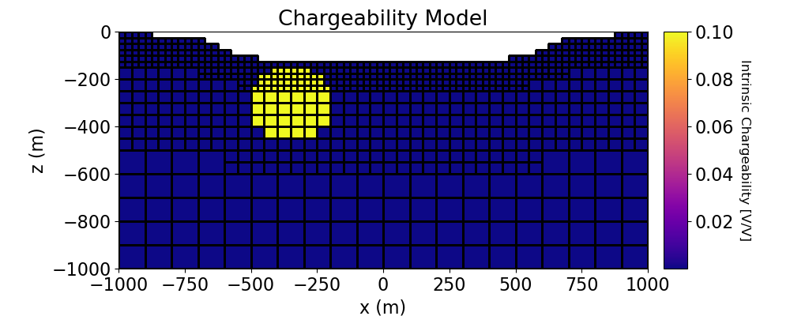

Note
Go to the end to download the full example code.
DC/IP Forward Simulation in 3D#
Here we use the module simpeg.electromagnetics.static.resistivity to predict DC resistivity data on an OcTree mesh. Then we use the module simpeg.electromagnetics.static.induced_polarization to predict IP data. In this tutorial, we focus on the following:
How to define the survey
How to definine a tree mesh based on the survey geometry
How to define the forward simulations
How to predict DC and IP for a synthetic conductivity model and a synthetic chargeability model
How to include surface topography
The units of the model and resulting data
Plotting DC and IP data in 3D
In this case, we simulate dipole-dipole data for three East-West lines and two North-South lines.
Import modules#
import os
import numpy as np
import matplotlib as mpl
import matplotlib.pyplot as plt
from discretize import TreeMesh
from discretize.utils import mkvc, refine_tree_xyz, active_from_xyz
from simpeg import maps, data
from simpeg.utils import model_builder
from simpeg.utils.io_utils.io_utils_electromagnetics import write_dcip_xyz
from simpeg.electromagnetics.static import resistivity as dc
from simpeg.electromagnetics.static import induced_polarization as ip
from simpeg.electromagnetics.static.utils.static_utils import (
generate_dcip_sources_line,
apparent_resistivity_from_voltage,
)
# To plot DC/IP data in 3D, the user must have the plotly package
try:
import plotly
from simpeg.electromagnetics.static.utils.static_utils import plot_3d_pseudosection
has_plotly = True
except ImportError:
has_plotly = False
pass
mpl.rcParams.update({"font.size": 16})
write_output = False
# sphinx_gallery_thumbnail_number = 4
Defining Topography#
Here we define surface topography as an (N, 3) numpy array. Topography could also be loaded from a file. In our case, our survey takes place within a circular depression.
x_topo, y_topo = np.meshgrid(
np.linspace(-2100, 2100, 141), np.linspace(-2000, 2000, 141)
)
s = np.sqrt(x_topo**2 + y_topo**2)
z_topo = (1 / np.pi) * 140 * (-np.pi / 2 + np.arctan((s - 600.0) / 80.0))
x_topo, y_topo, z_topo = mkvc(x_topo), mkvc(y_topo), mkvc(z_topo)
topo_xyz = np.c_[x_topo, y_topo, z_topo]
Construct the DC Survey#
Here we define 5 DC lines that use a dipole-dipole electrode configuration; three lines along the East-West direction and 2 lines along the North-South direction. For each source, we must define the AB electrode locations. For each receiver we must define the MN electrode locations. Instead of creating the survey from scratch (see 1D example), we will use the generat_dcip_sources_line utility. This utility will give us the source list for a given DC/IP line. We can append the sources for multiple lines to create the survey.
# Define the parameters for each survey line
survey_type = "dipole-dipole"
dc_data_type = "volt"
dimension_type = "3D"
end_locations_list = [
np.r_[-1000.0, 1000.0, 0.0, 0.0],
np.r_[-350.0, -350.0, -1000.0, 1000.0],
np.r_[350.0, 350.0, -1000.0, 1000.0],
]
station_separation = 100.0
num_rx_per_src = 8
# The source lists for each line can be appended to create the source
# list for the whole survey.
source_list = []
for ii in range(0, len(end_locations_list)):
source_list += generate_dcip_sources_line(
survey_type,
dc_data_type,
dimension_type,
end_locations_list[ii],
topo_xyz,
num_rx_per_src,
station_separation,
)
# Define the survey
dc_survey = dc.survey.Survey(source_list)
Create OcTree Mesh#
Here, we create the OcTree mesh that will be used to predict DC data.
# Defining domain side and minimum cell size
dh = 25.0 # base cell width
dom_width_x = 6000.0 # domain width x
dom_width_y = 6000.0 # domain width y
dom_width_z = 4000.0 # domain width z
nbcx = 2 ** int(np.round(np.log(dom_width_x / dh) / np.log(2.0))) # num. base cells x
nbcy = 2 ** int(np.round(np.log(dom_width_y / dh) / np.log(2.0))) # num. base cells y
nbcz = 2 ** int(np.round(np.log(dom_width_z / dh) / np.log(2.0))) # num. base cells z
# Define the base mesh
hx = [(dh, nbcx)]
hy = [(dh, nbcy)]
hz = [(dh, nbcz)]
mesh = TreeMesh([hx, hy, hz], x0="CCN")
# Mesh refinement based on topography
k = np.sqrt(np.sum(topo_xyz[:, 0:2] ** 2, axis=1)) < 1200
mesh = refine_tree_xyz(
mesh, topo_xyz[k, :], octree_levels=[0, 6, 8], method="surface", finalize=False
)
# Mesh refinement near sources and receivers.
electrode_locations = np.r_[
dc_survey.locations_a,
dc_survey.locations_b,
dc_survey.locations_m,
dc_survey.locations_n,
]
unique_locations = np.unique(electrode_locations, axis=0)
mesh = refine_tree_xyz(
mesh, unique_locations, octree_levels=[4, 6, 4], method="radial", finalize=False
)
# Finalize the mesh
mesh.finalize()
/home/vsts/work/1/s/tutorials/06-ip/plot_fwd_3_dcip3d.py:146: FutureWarning: In discretize v1.0 the TreeMesh will change the default value of diagonal_balance to True, which will likely slightly change meshes you have previously created. If you need to keep the current behavior, explicitly set diagonal_balance=False.
mesh = TreeMesh([hx, hy, hz], x0="CCN")
/home/vsts/work/1/s/tutorials/06-ip/plot_fwd_3_dcip3d.py:150: DeprecationWarning: The surface option is deprecated as of `0.9.0` please update your code to use the `TreeMesh.refine_surface` functionality. It will be removed in a future version of discretize.
mesh = refine_tree_xyz(
/home/vsts/work/1/s/tutorials/06-ip/plot_fwd_3_dcip3d.py:162: DeprecationWarning: The radial option is deprecated as of `0.9.0` please update your code to use the `TreeMesh.refine_points` functionality. It will be removed in a future version of discretize.
mesh = refine_tree_xyz(
Create Conductivity Model and Mapping for OcTree Mesh#
Here we define the conductivity model that will be used to predict DC resistivity data. The model consists of a conductive block and a resistive block within a moderately conductive background. Note that you can carry through this work flow with a resistivity model if desired.
# Define conductivity model in S/m (or resistivity model in Ohm m)
air_value = 1e-8
background_value = 1e-2
conductor_value = 1e-1
resistor_value = 1e-3
# Find active cells in forward modeling (cell below surface)
ind_active = active_from_xyz(mesh, topo_xyz)
# Define mapping from model to active cells
nC = int(ind_active.sum())
conductivity_map = maps.InjectActiveCells(mesh, ind_active, air_value)
# Define model
conductivity_model = background_value * np.ones(nC)
ind_conductor = model_builder.get_indices_sphere(
np.r_[-350.0, 0.0, -300.0], 160.0, mesh.cell_centers[ind_active, :]
)
conductivity_model[ind_conductor] = conductor_value
ind_resistor = model_builder.get_indices_sphere(
np.r_[350.0, 0.0, -300.0], 160.0, mesh.cell_centers[ind_active, :]
)
conductivity_model[ind_resistor] = resistor_value
# Plot Conductivity Model
fig = plt.figure(figsize=(10, 4))
plotting_map = maps.InjectActiveCells(mesh, ind_active, np.nan)
log_mod = np.log10(conductivity_model)
ax1 = fig.add_axes([0.15, 0.15, 0.67, 0.75])
mesh.plot_slice(
plotting_map * log_mod,
ax=ax1,
normal="Y",
ind=int(len(mesh.h[1]) / 2),
grid=True,
clim=(np.log10(resistor_value), np.log10(conductor_value)),
pcolor_opts={"cmap": mpl.cm.viridis},
)
ax1.set_title("Conductivity Model")
ax1.set_xlabel("x (m)")
ax1.set_ylabel("z (m)")
ax1.set_xlim([-1000, 1000])
ax1.set_ylim([-1000, 0])
ax2 = fig.add_axes([0.84, 0.15, 0.03, 0.75])
norm = mpl.colors.Normalize(
vmin=np.log10(resistor_value), vmax=np.log10(conductor_value)
)
cbar = mpl.colorbar.ColorbarBase(
ax2, cmap=mpl.cm.viridis, norm=norm, orientation="vertical", format="$10^{%.1f}$"
)
cbar.set_label("Conductivity [S/m]", rotation=270, labelpad=15, size=12)

Project Survey to Discretized Topography#
It is important that electrodes are not modeled as being in the air. Even if the electrodes are properly located along surface topography, they may lie above the discretized topography. This step is carried out to ensure all electrodes lie on the discretized surface.
dc_survey.drape_electrodes_on_topography(mesh, ind_active, option="top")
/home/vsts/work/1/s/tutorials/06-ip/plot_fwd_3_dcip3d.py:247: FutureWarning: Argument ``option`` is deprecated in favor of ``topo_cell_cutoff`` and will be removed in SimPEG v0.27.0.
dc_survey.drape_electrodes_on_topography(mesh, ind_active, option="top")
Predict DC Resistivity Data#
Here we predict DC resistivity data. If the keyword argument sigmaMap is defined, the simulation will expect a conductivity model. If the keyword argument rhoMap is defined, the simulation will expect a resistivity model.
# Define the DC simulation
dc_simulation = dc.Simulation3DNodal(mesh, survey=dc_survey, sigmaMap=conductivity_map)
# Predict the data by running the simulation. The data are the measured voltage
# normalized by the source current in units of V/A.
dpred_dc = dc_simulation.dpred(conductivity_model)
Plot DC Data in 3D Pseudosection#
Here we demonstrate how 3D DC resistivity data can be represented on a 3D pseudosection plot. To use this utility, you must have Python’s plotly package. Here, we represent the data as apparent conductivities.
The plot_3d_pseudosection utility allows the user to plot all pseudosection points, or plot the pseudosection plots that lie within some distance of one or more planes.
# Since the data are normalized voltage, we must convert predicted
# to apparent conductivities.
apparent_conductivity = 1 / apparent_resistivity_from_voltage(
dc_survey,
dpred_dc,
)
# For large datasets or for surveys with unconventional electrode geometry,
# interpretation can be challenging if we plot every datum. Here, we plot
# 3 out of the 5 survey lines to better image anomalous structures.
# To plot ALL of the data, simply remove the keyword argument *plane_points*
# when calling *plot_3d_pseudosection*.
plane_points = []
p1, p2, p3 = np.array([-1000, 0, 0]), np.array([1000, 0, 0]), np.array([0, 0, -1000])
plane_points.append([p1, p2, p3])
p1, p2, p3 = (
np.array([-350, -1000, 0]),
np.array([-350, 1000, 0]),
np.array([-350, 0, -1000]),
)
plane_points.append([p1, p2, p3])
p1, p2, p3 = (
np.array([350, -1000, 0]),
np.array([350, 1000, 0]),
np.array([350, 0, -1000]),
)
plane_points.append([p1, p2, p3])
if has_plotly:
fig = plot_3d_pseudosection(
dc_survey,
apparent_conductivity,
scale="log",
units="S/m",
plane_points=plane_points,
plane_distance=15,
)
fig.update_layout(
title_text="Apparent Conductivity",
title_x=0.5,
title_font_size=24,
width=650,
height=500,
scene_camera=dict(center=dict(x=0.05, y=0, z=-0.4)),
)
plotly.io.show(fig)
else:
print("INSTALL 'PLOTLY' TO VISUALIZE 3D PSEUDOSECTIONS")
Define IP Survey#
In the same manner as before, we use the generate_dcip_sources_lines to generate an IP survey whose receivers define the data in terms of the apparent chargeability (V/V).
# Generate source list for IP survey lines
ip_data_type = "apparent_chargeability"
source_list = []
for ii in range(0, len(end_locations_list)):
source_list += generate_dcip_sources_line(
survey_type,
ip_data_type,
dimension_type,
end_locations_list[ii],
topo_xyz,
num_rx_per_src,
station_separation,
)
# Define survey
ip_survey = ip.survey.Survey(source_list)
# Drape to discretized topography as before
ip_survey.drape_electrodes_on_topography(mesh, ind_active, option="top")
/home/vsts/work/1/s/tutorials/06-ip/plot_fwd_3_dcip3d.py:360: FutureWarning: Argument ``option`` is deprecated in favor of ``topo_cell_cutoff`` and will be removed in SimPEG v0.27.0.
ip_survey.drape_electrodes_on_topography(mesh, ind_active, option="top")
Create Chargeability Model and Mapping for OcTree Mesh#
Here we define the chargeability model that will be used to predict IP data. Here we assume that the conductive sphere is also chargeable but the resistive sphere is not. Here, the chargeability model represents the intrinsic chargeability of the Earth (V/V).
# Define intrinsic chargeability model (V/V)
air_value = 1e-8
background_value = 1e-6
chargeable_value = 1e-1
# Define mapping from model to active cells
chargeability_map = maps.InjectActiveCells(mesh, ind_active, air_value)
# Define model
chargeability_model = background_value * np.ones(nC)
ind_chargeable = model_builder.get_indices_sphere(
np.r_[-350.0, 0.0, -300.0], 160.0, mesh.cell_centers[ind_active, :]
)
chargeability_model[ind_chargeable] = chargeable_value
# Plot Chargeability Model
fig = plt.figure(figsize=(10, 4))
plotting_map = maps.InjectActiveCells(mesh, ind_active, np.nan)
ax1 = fig.add_axes([0.15, 0.15, 0.67, 0.75])
mesh.plot_slice(
plotting_map * chargeability_model,
ax=ax1,
normal="Y",
ind=int(len(mesh.h[1]) / 2),
grid=True,
clim=(background_value, chargeable_value),
pcolor_opts={"cmap": mpl.cm.plasma},
)
ax1.set_title("Chargeability Model")
ax1.set_xlabel("x (m)")
ax1.set_ylabel("z (m)")
ax1.set_xlim([-1000, 1000])
ax1.set_ylim([-1000, 0])
ax2 = fig.add_axes([0.84, 0.15, 0.03, 0.75])
norm = mpl.colors.Normalize(vmin=background_value, vmax=chargeable_value)
cbar = mpl.colorbar.ColorbarBase(
ax2, cmap=mpl.cm.plasma, norm=norm, orientation="vertical", format="%.2f"
)
cbar.set_label("Intrinsic Chargeability [V/V]", rotation=270, labelpad=15, size=12)

Predict IP Data#
Here we use a chargeability model and a background conductivity/resistivity model to predict IP data.
# We use the keyword argument *sigma* to define the background conductivity on
# the mesh. We could use the keyword argument *rho* to accomplish the same thing
# using a background resistivity model.
ip_simulation = ip.Simulation3DNodal(
mesh,
survey=ip_survey,
etaMap=chargeability_map,
sigma=conductivity_map * conductivity_model,
)
# Run forward simulation and predicted IP data. The data are the voltage (V)
dpred_ip = ip_simulation.dpred(chargeability_model)
Plot IP Data in 3D Pseudosection#
Here we demonstrate how 3D IP data can be represented on a 3D pseudosection plot. To use this utility, you must have Python’s plotly package. Here, we represent the data as apparent chargeabilities. Since the IP data are already represented as apparent chargeabilities, we can plot the data directly.
if has_plotly:
fig = plot_3d_pseudosection(
ip_survey,
dpred_ip,
vlim=[0.0, np.max(dpred_ip)],
scale="linear",
units="V/V",
plane_points=plane_points,
plane_distance=15,
marker_opts={"colorscale": "plasma"},
)
fig.update_layout(
title_text="Apparent Chargeability",
title_x=0.5,
title_font_size=24,
width=650,
height=500,
scene_camera=dict(center=dict(x=0.05, y=0, z=-0.4)),
)
plotly.io.show(fig)
else:
print("INSTALL 'PLOTLY' TO VISUALIZE 3D PSEUDOSECTIONS")
Optional: Write Outputs#
if write_output:
dir_path = os.path.dirname(__file__).split(os.path.sep)
dir_path.extend(["outputs"])
dir_path = os.path.sep.join(dir_path) + os.path.sep
if not os.path.exists(dir_path):
os.mkdir(dir_path)
# Write topography
fname = dir_path + "topo_xyz.txt"
np.savetxt(fname, topo_xyz, fmt="%.4e")
# Add 10% Gaussian noise to each datum
np.random.seed(433)
std = 0.1 * np.abs(dpred_dc)
noise = std * np.random.randn(len(dpred_dc))
dobs = dpred_dc + noise
# Create dictionary that stores line IDs
N = int(dc_survey.nD / 3)
lineID = np.r_[np.ones(N), 2 * np.ones(N), 3 * np.ones(N)]
out_dict = {"LINEID": lineID}
# Create a survey with the original electrode locations
# and not the shifted ones
source_list = []
for ii in range(0, len(end_locations_list)):
source_list += generate_dcip_sources_line(
survey_type,
dc_data_type,
dimension_type,
end_locations_list[ii],
topo_xyz,
num_rx_per_src,
station_separation,
)
dc_survey_original = dc.survey.Survey(source_list)
# Write out data at their original electrode locations (not shifted)
data_obj = data.Data(dc_survey_original, dobs=dobs, standard_deviation=std)
fname = dir_path + "dc_data.xyz"
write_dcip_xyz(
fname,
data_obj,
data_header="V/A",
uncertainties_header="UNCERT",
out_dict=out_dict,
)
# Add Gaussian noise with a standard deviation of 5e-3 V/V
np.random.seed(444)
std = 5e-3 * np.ones_like(dpred_ip)
noise = std * np.random.randn(len(dpred_ip))
dobs = dpred_ip + noise
# Create a survey with the original electrode locations
# and not the shifted ones.
source_list = []
for ii in range(0, len(end_locations_list)):
source_list += generate_dcip_sources_line(
survey_type,
ip_data_type,
dimension_type,
end_locations_list[ii],
topo_xyz,
num_rx_per_src,
station_separation,
)
ip_survey_original = ip.survey.Survey(source_list)
# Write out data at their original electrode locations (not shifted)
data_obj = data.Data(ip_survey, dobs=dobs, standard_deviation=std)
fname = dir_path + "ip_data.xyz"
write_dcip_xyz(
fname,
data_obj,
data_header="APP_CHG",
uncertainties_header="UNCERT",
out_dict=out_dict,
)
Total running time of the script: (0 minutes 20.953 seconds)
Estimated memory usage: 325 MB